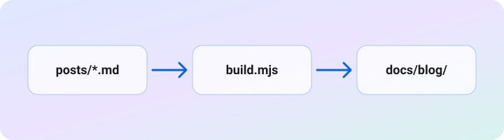

This site started as a one-page CV. When I wanted a place to write longer notes, I didn't want to add a framework or a deployment pipeline for a handful of posts. So the blog follows the same pattern the CV already uses: a small Node script generates static files, and those files are committed next to the rest of the site.
The pipeline

Each post is a Markdown file in blog/posts/ with a few lines of front matter:
---
title: How this blog is built
date: 2026-10-01
summary: One sentence for the index, the feed and link previews.
category: tech
---
Running npm run build reads every post, renders it with marked, and writes:
- an index page, sorted newest first
- one HTML page per post, with Open Graph tags and a canonical URL
- a plain
.mdcopy of every post, for tools and LLMs - an RSS feed
GitHub Pages then serves the docs/ folder as it is.
Small rules that save time later
The build is strict on purpose. It stops with a clear message instead of publishing something broken:
| Problem | What happens |
|---|---|
| Missing title, date or summary | Build fails |
| Two posts with the same slug | Build fails |
| Image referenced but not on disk | Build fails |
draft: true |
Post is skipped |
It is also deterministic: no timestamps in the output, so rebuilding without changes produces no diff, and git status only shows what actually changed.
The best build step is the one you can run twice and forget about.
Why not a static site generator?
For a few posts a year, a script of under 300 lines that I fully understand is easier to live with than a toolchain I have to keep updated. If the blog grows, swapping it for a real generator later is straightforward: the posts are plain Markdown either way.